- Adopting EET naming conventions for BG1 resources
- Implementing BG1 random items
- Implementing area music
- Adding support for EET chapters/journal system
- Working with files that are merged during installation
- Detecting EET within WeiDU code
- Detecting EET within UI.MENU (GUI) code
- Trigger filtering across BG1, SoD, BG2:SoA, BG2:ToB
- Adding AreaType to BG1 ARE files
- Detecting mods installed on BG:EE
- Adding support for mods installable on BG:EE previous to installing EET on BG2:EE
- Adding support for shattering items (iron crisis) system in BG1 portion of the game
- Importing more items to BG2
- Adding support for NPC transition system
- Workaround for CalanderDay command in SoD/BG2 portion of the game
- Adding new animations
- Adding support for EET Worldmap
Adopting EET naming conventions for BG1 resources
If your mod is designed to work not only with EET but also other platforms you should consider using either:
- cpmvars variable libraries - a set of variable declaration for BG:EE/BGT/Tutu/EET. INCLUDE each of these TPA files using GAME_IS WeiDU command, depending on each platform. These will cover all area names, area scripts, NPC dialogue and some other differences, allowing you to code everything with the same WeiDU code (by replacing resource name with variable). If some resource is not implemented here you can expand it to cover all your needs. It's a well known way of coding, with plenty of examples in released mods, so let's focus only on new additions related to EET.
- eet_var - can be used to add EET "_" suffix at the end of files. Other platforms will return nothing for it, so it can be used to properly reference EET BG1 resources that are not already handled by existing cpmvars. Take a look at EET conventions section if you have problem understanding why exactly this variable is handy.
- BGT_VAR - not exactly new addition (it already existed with the same purpose for BGT) but still useful for EET. It can be used as trigger filter to shutdown of D (DLG) and BAF (BCS) BG1 content blocks. The variable evaluates into following trigger: GlobalLT("ENDOFBG1","GLOBAL",2). Content filtering is explained in later part of this document.
- bg2_chapter_1-10 - variables that should replace BG2 chapter numbers in your code. More information in this section.
- wmp_xCoord_SoA, wmp_yCoord_SoA, wmp_mapIcon_BG1, wmp_mapIcon_ToB, wmp_worldmap_ToB - a bunch of variables that can be used to properly patch EET Worldmap with the same code as in other platforms. They have been explained in this section. - BG1 Platform-Abstraction Layer (BG1PAL) - a resource-name abstraction library for the different versions of Baldur's Gate. It converts canonical resource names into the appropriate form for the current platform via the function fl#bg1pal, which is available both as an action and a patch function. All resource names and resource types are supported. The input name is the one from BG1/BG:EE. For more extensive documentation, please refer to the readme.html file distributed with this resource.
You can also patch files directly using EET_modConverter tool that has custom version of Platform Conversion Utility in it, specialized in converting BG:EE and BGT code and resources to adopt EET BG1 naming conventions. The tool will print all changes it makes into a log file, so you can review them if they are really needed. "Patching (...)" in log means that the input file has been patched and copied to output directory of the tool. "Analyzing (...)" means that the tool found an instance of the particular resource in tp2/tph/tpp/tpa files that didn't have extension provided. In such case the file is not patched but you should manually check if suggested change is warranted. Keep in mind that PCU part of this tool is designed for mods with BG1/BG:EE content only. You should not use it for mods with BG2 resources/code, unless you really know you're doing. Supported files that this tool can automatically convert: ARE, BAF, BCS, CRE, D, DLG, EFF, GAM, ITM, SPL, STO, TBL, TP2, TPH, TPP, TPA, TRA, VVC, WED, WMP. Other than renaming and patching files to use EET naming convention it will also handle converting ARE Song references to use EET song playlist.
Implementing BG1 random items
Infinity Engine uses dummy items in order to assign random loot through the game. There are 2 ways to implement them:
- via RNDEQUIP.2DA, RNDMAGIC.2DA, RNDSCROL.2DA, RNDTREAS.2DA, RNDWEAP.2DA system from vanilla engine
- via RNDTRES.2DA system added in EE engine
In EET RNDTRES.2DA is used for random tables related to SoD content (no changes compared to vanilla SoD, new rows are simply appended to the file.). But for the vanilla BG1 content old system is still in use due to problem with item identification when another dummy item is referenced in a row. This means that BG1 random items have different names compared to vanilla BG:EE which needs to be adopted in mods that use them. EET uses exactly the same item names for BG1 items as BGT (the only difference is that EET also makes entries from RNDEQUIP.2DA unique), so if your mod already has compatibility code/resources for that platform it will also work with EET. To make the resource patching easier we've prepared a new WeiDU function that can be used to automatically patch any resource to use correct BG1 dummy item names, regardless of platform, available within EET_functions.tph. BG1_RND_ITM patch function supports following resources: ARE, CRE, EFF, ITM, SPL, STO. Example usage:
COPY ~somefile~ ~override~
LPF BG1_RND_ITM
INT_VAR
src = 1 //source platform for dummy item names used in the patched file: 0 (default, no need to assign) - BG1 / BG:EE / Tutu; 1 - BGT; 2 - EET
END
Implementing area music
EET uses all music files present in BG:EE, SoD and BG2:EE. The mod is meant to be installed on clean installation of BG2:EE, which allows it to set a common standard for song numbers for mods installed later. All BG2:EE song references are kept as they were, BG:EE and SoD songs that were missing in BG2:EE become appended to songlist.2da during EET installation - use it as a reference. It's also easy to patch areas from BG:EE and BGT mods to use EET common standard for song numbers thanks to EET_modConverter tool, as has been explained here.
Adding support for EET chapters/journal system
EET uses united journal system that keeps track of all 22 chapters of your journey. Here is a reference information when each chapter starts and ends:
- Baldur's Gate - chapters from 0 to 7 (no changes compared to vanilla BG:EE).
- Chapter 0: Candlekeep prologue -------> Leaving Candlekeep
- Chapter 1: Leaving Candlekeep -------> Entering Nashkel
- Chapter 2: Entering Nashkel -------> Nashkel Mine Finish
- Chapter 3: Picking up documents in Nashkel Mines, Mulahey dead -------> Looting Tazok's chest in Bandit Camp
- Chapter 4: Looting Tazok's chest in Bandit Camp -------> Killing Daevorn in Cloakwood Mine
- Chapter 5: Killing Daevorn in Cloakwood Mine -------> Receiving Book from Duke Eltan
- Chapter 6: Receiving Book from Duke Eltan -------> Coming out of Candlekeep Catacombs
- Chapter 7 Part 1: Coming out of Candlekeep Catacombs -------> Transition to SoD (Korlasz's Tomb)
- Siege of Dragonspear expansion - chapters from 7 to 13 (no changes compared to vanilla BG:EE+SoD).
- Chapter 7 Part 2: Korlasz's Tomb -------> Leaving Baldur's Gate
- Chapter 8: Leaving Baldur's Gate -------> Reaching Boareskyr Bridge
- Chapter 9: Reaching Boareskyr Bridge -------> Reaching Coalition Camp
- Chapter 10: Reaching Coalition Camp -------> Reaching Dragonspear Castle
- Chapter 11: Reaching Dragonspear Castle -------> Entering the Portal to Avernus
- Chapter 12: Entering the Portal -------> Arrested for murdering Skie
- Chapter 13 Part 1: Escaping from Baldur's Gate + Being captured by Irenicus -------> Transition to SoA (Irenicus Dungeon)
- Baldur's Gate II: Shadows of Amn - chapters from 13 to 19 (instead of 1-7).
- Chapter 13 Part 2: Escaping from Irenicus Dungeon -------> Having talked to Gaelan
- Chapter 14: Having talked to Gaelan -------> Deciding for either Bodhi or Gaelan offer
- Chapter 15: Decision on path to Spellhold made ---(running jobs for your ally)----> Starting the Journey to Spellhold
- Chapter 16: Journey to Spellhold -------> Entering Underdark
- Chapter 17: Entering Underdark -------> Back to Surface, Elhan's Camp
- Chapter 18: Back on Surface after Underdark -------> Entering Suldanessalar
- Chapter 19: Entering Suldanessalar -------> Transition to ToB (Sacred Grove)
- Throne of Bhaal expansion - chapters from 20 to 22 (instead of 8-10).
- Chapter 20: Sacred Grove (Illasera encounter) -------> Reaching Amkethran
- Chapter 21: Reaching Amkethran -------> Entering ToB Final
- Chapter 22: Final Fight at Throne of Bhaal
As you can see from above reference mods that uses Chapter variable should adopt EET continuous chapters/journal system when it comes to Shadows of Amn and Throne of Bhaal chapters (no changes in BG:EE and SoD content). Sounds like a nightmare compatibility wise, right? Well... not really. All changes to your code can be implemented automatically without any effort on your part. There are 2 ways do it:
- EET_modConverter - this tool can be used to automatically convert any BG2 and ToB code to use cpmvars like system for chapters. It will patch all BAF, D, TP2, TPH, TPP, TPA files to use variables instead of numbers whenever SetGlobal, Global, GlobalGT, GlobalLT commands related to chapter number are used in your code. Variable declaration depending on platform will be also automatically added to ALWAYS section of tp2 file (you can remove this additional code if you already use cpmvars variable libraries).
- EET_functions.tph - this file contains several functions related to EET compatibility patching. Among other things it contains an action function called EET_JOURNAL which can be used in your code to patch files designed for other platforms on the fly during mod installation. Here is example how it's meant to be used:
ACTION_DEFINE_ARRAY arrayName BEGIN ~AERIE.bcs~ ~modDir/AERIE.d~ ~%var%/ALARM25.baf~ END
LAF ~EET_CHAPTERS~
INT_VAR
patch_mode = 1 //0 - replace with values; 1 - replace with variables (default = 0)
STR_VAR
file_array = ~arrayName~ //array with files to patch (supports: d, dlg, baf, bcs, and any text file with code)
END
Working with files that are merged during installation
EET is installed in two steps - main component (setup-EET) on a clean BG2:EE, and additional setup-EET_end component at the end of mod installation process (after any other mods). This second step is used to automatically:
- merge NPC JOIN dialogue files and update all references to them
- update campaign related 2da files that may have missing entries
- export mod added strings that can be used to update mod added content in new installation
- generate code for SoA item importation based on 2da files
Why exactly NPC JOIN dialogue files are being merged? Short answer - interjections. Let's use an example from vanilla game.
Party travels through Athkatla slums where they can meet a shady looking guy that initiates a dialogue: "Yes, you! See this mighty fine sphere here? You can have it for your very own for a mere 500 gold pieces! What do you say?". Now if you have Minsc in the party following interjection is called "Boo says such a sphere will not fit into my pocket. If I can't carry it with me, it's just not a good buy."
The above dialogue piece called 'interjection' is triggered by WAYLANE.DLG and filtered with triggers, in this case See("Minsc") and InParty("Minsc"). Now let's say you didn't meet this guy during your Shadows of Amn travels. What would happen after going back from Throne of Bhaal to Athkatla with Minsc? The dialogue would be interrupted in the place where Minsc is expected to say something (dialogue shutdown/infinite loop and other problems). In order to make JOIN dialogue files valid through whole journey continuous characters that uses more than 1 JOIN dialogue file have them merged with one another.
JOIN dialogue file merging is done automatically, based on PDIALOG variants 2DA entries, at the end of installation process (after all mods are already installed), so modders don't need to change anything when it comes to JOIN dialogue coding. You should patch each dialogue file exactly the same way as you do in vanilla games. State numbers and file names are not altered at that point of installation (just keep in mind that some BG1 files have been renamed due to conflicts with BG2). You can use this reference file that lists different files that are assigned through out the game (green colour cells shows BG1 renamed files - if you're using cpmvars variable libraries then you don't even need to be aware about it).
Detecting EET within WeiDU code
- There is a new WeiDU parameter used with GAME_IS command for EET detection: GAME_IS ~eet~
- EET is also detectable with: ENGINE_IS ~bg2ee~ and GAME_INCLUDES (which accepts parameters from every game included in EET)
Once again EET_modConverter may be handy if you need to replace many instances of GAME_IS command in your code - the tool has an option to do it automatically.
Detecting EET within UI.MENU (GUI) code
In order to detect EET presence from within UI.MENU LUA code (for example to enable some features in cross platform compatible GUI mods) you can use following code:
eetState = Infinity_GetINIValue('Program Options','EET Installation State')
In this example code 'eetState' variable will return 0 on non EET games and 2 when it's EET installation (or 1 if setup-EET_end component has not been installed yet). Example usage:
enabled "eetState ~= 0" --enabled if game is EET enabled "eetState == 0" --enabled if game is not EET if eetState > 0 then --EET installation --some code else --not EET installation --some code end
Trigger filtering across BG1, SoD, BG2:SoA, BG2:ToB
EET uses following GLOBAL in-game variable filters for vanilla campaigns to shut off content that no longer should show up after certain point of the story.
- CHAPTER - that's an obvious way to handle things. Unlike BGT, EET uses continuous journal/chapter system, so the game consists of 22 chapters in total. You can use this variable reliably for this purpose.
- ENDOFBG1 - variable will return 1 after the death of Sarevok. It is set to 2 after Siege of Dragonspear -> Shadows of Amn transition. In other words you can use it to filter content designed only for BG:EE part of the story (or only for BG2 if you assigned the trigger to check if the result equals 2).
- InToB - vanilla variable that is set to 1 in the first area of Throne of Bhaal expansion (AR4000.BCS)
All these variables are correctly set even if you start the game in SoD, BG2 or ToB, so they should be always reliable for content filtering.
There may be situations where you want to filter content to show up (or not) when party is returning to old areas. For this purpose EET added new "BG1AREA" entry to AREATYPE.IDS. You can check if the current area is part of BG1 campaign via following triggers:
- AreaType(BG1AREA) - returns true only if the active CRE is in one of the BG1/SoD areas (areas added by BG1 mods should be patched to use it too).
- !AreaType(BG1AREA) - returns true only if the active CRE is NOT in one of the BG1/SoD areas (which means BG2/ToB).
If you need more precision with detecting areas you can also use additional AreaCheck(S:ResRef*) triggers.
Adding AreaType to BG1 ARE files
You can patch area files with WeiDU code during your mod installation. First retrieve the BIT number associated with BG1AREA from AREATYPE.IDS using this action command:
ADD_AREA_TYPE BG1AREA
And than patch area files with this code:
WRITE_SHORT 0x48 THIS | (1 << BG1AREA)
Detecting mods installed on BG:EE
As has been mentioned in the readme F.A.Q section EET has limited support for BG:EE mods installed on BG:EE previous to installing EET on BG2:EE. Mods installed this way are treated exactly the same as vanilla resources and end up as part of the BG2:EE EET installation. So, how can other mods detect if a particular mod has been installed on BG:EE? There are 2 ways to do it:
- dummy files are often used by mods to make them detectable by other mods. They are copied to EET override directory during installation, so can be normally detected via FILE_EXISTS_IN_GAME WeiDU command.
- WeiDU.log file from BG:EE is copied to main directory as "WeiDU-BGSoD.log", which allows modders to use workarounds for existing WeiDU functions. Here are few examples using BG1 NPC Project component 0, any language:
//works the same as REQUIRE_COMPONENT
REQUIRE_PREDICATE (FILE_EXISTS ~WeiDU-BGSoD.log~) AND (FILE_CONTAINS ~WeiDU-BGSoD.log~ ~BG1NPC\.TP2. #[0-9]+ #0 ~) ~~
//works the same as FORBID_COMPONENT
REQUIRE_PREDICATE (!FILE_EXISTS ~WeiDU-BGSoD.log~) OR ((FILE_EXISTS ~WeiDU-BGSoD.log~) AND (!FILE_CONTAINS ~WeiDU-BGSoD.log~ ~BG1NPC\.TP2. #[0-9]+ #0 ~)) ~~
//works the same as MOD_IS_INSTALLED
ACTION_IF (FILE_EXISTS ~WeiDU-BGSoD.log~) AND (FILE_CONTAINS ~WeiDU-BGSoD.log~ ~BG1NPC\.TP2. #[0-9]+ #0 ~) BEGIN
//do something if component has been detected
END ELSE BEGIN
//do something if component has NOT been detected
END
Of course if your mod is meant to also detect the mod installed natively than you should nest above mentioned code with vanilla WeiDU commands used for mod detection.
Overall this workaround doesn't sound like a very useful thing because BG:EE mods usually don't affect BG2:EE content, so the need for additional check for them in BG2:EE mods is not common. The ones affected are usually installed on BG:EE too, so any WeiDU mod detection command works correctly at that time. And the more complicated mods (such as BG1 NPC Project) already uses dummy files, so they are detectable without any hassle anyway.
Adding support for mods installable on BG:EE previous to installing EET on BG2:EE
If you're not planning to convert your BG:EE mod to work natively with EET, you may be interested in a solution that treats mods installed on BG:EE (previous to installing EET on BG2:EE) as vanilla content, which means all new BG:EE resources are converted on the fly with vanilla files. For more information how to achieve this please take a look at BGEE_to_EET_mod_checker tool readme file.
Adding support for shattering items (iron crisis) system in BG1 portion of the game
EET uses the same system as vanilla BG:EE+SoD installation - via opcode 232. There is a pre-made action function available within EET_functions.tph in case you would like to add more items into iron crisis pool. It first removes BG:EE/Tutu/BGT/EET implementation (if already present) and automatically patch files to add BG:EE/EET item shattering system. The function can be used not only for weapons but also armors, shield and helmets listed in the array.
ACTION_DEFINE_ARRAY arrayName BEGIN ~modDir/weapon.itm~ ~modDir/armor.itm~ ~%var%/shield.itm~ ~override/helmet.itm~ END
LAF ~EET_IRON_CRISIS~
STR_VAR
shattering_array = EVAL ~arrayName~ //array with files to patch (supports: weapons, armors, shields, helmets)
END
Importing more items to BG2
In vanilla game when you import your character only Player1 inventory is checked and bags of holding are lost. In order to expand item importation for whole party and junk located in bags of holding EET introduced a new way to import items. Modders should use exactly the same code in AR0602.BCS as they do in vanilla game. The only change needed is appending the item that you would like to be imported into K#IMPORT.2DA:
APPEND ~K#IMPORT.2DA~ ~1 CHAN06~ UNLESS ~CHAN06~
This way the item will be in Player1 inventory at the beginning of Irenicus Dungeon even if it belonged to other party member during transition or was stored in a bag of holding. Your importation code should be expanded on top of AR0602.BCS like in vanilla game (before block that takes all items from your inventory). That's all you really need to know to create mods compatible with EET, but here is a full explanation how the system works in case you'd like to take advantage of other features of this system:
- During setup-EET_end component installation K#IMPORT.2DA, IMPORT01.2DA, IMPORT02.2DA, IMPORT03.2DA and BDSODIMP.BCS files are read and the importation code is automatically generated at the top of K#TELBGT.BCS script using filenames found within those previously analysed files
- The importation code within K#TELBGT.BCS takes the referenced items from whole party + bags of holdings during SoD->BG2 transition and places them in a new bag of holding called K#IMPORT.ITM
- Now that the all relevant items are already within importation bag of holding the transition code moves all the remaining party items into invisible 'K#ImportContainer' container in BD6100.ARE (last area in SoD)
- At the end of script run CHARNAME receives importation bag of holding (K#IMPORT.ITM) with all imported items in it (so we are NOT limited to just 20 items)
- After CHARNAME is moved to Irenicus Dungeon there is a time for mods to do something with items imported to BG2 before they are taken away from player inventory
- Instead of completely destroying inventory and gold EET moves remaining items to invisible 'K#ImportContainer' container within AR0602.ARE and the gold is stored in K#ImportGold global variable. The same container also receives all items that we previously moved to container with the same name in BD6100.ARE
Adding support for NPC transition system
As mentioned in readme file EET uses new system for NPC transition from Siege of Dragonspear expansion to Shadows of Amn and from Shadows of Amn to Throne of Bhaal expansion. In order to make modder's life easier we've prepared a function designed to automatically add both types of transition to any kind of NPC mod. All you need to do to make your NPC fully compatible with EET is disabling your normal patching code for AR4000.BCS, AR4500.BCS, FATESP.DLG and using EET_NPC_TRANSITION function instead.
If your BG2 NPC is meant to have BG1->BG2 transition than you should add additional !BeenInParty("%DV%") trigger (where %DV% is death variable of your CRE) in the code that spawns new version of CRE file into BG2 area. This way such block won't trigger if the NPC is valid for migration from BG1 to BG2. For example:
//this code will spawn new version of CRE if the transition didn't occur and CRE was not left dead in BG1
IF
Global("MinscImport","MYAREA",0)
!BeenInParty("Minsc") //NPC was not in party at any point during BG1/SoD (otherwise he would be valid for trnsition)
GlobalLT("chapter","GLOBAL",20) //don't spawn him during ToB
!Dead("Minsc") //NPC has not been killed during BG1
THEN
RESPONSE #100
CreateCreature("Minsc7",[4029.2759],6)
ActionOverride("Minsc",MakeGlobalOverride()) //just to be sure that there is no more than 1 entry in GAM file
SetGlobal("MinscImport","MYAREA",1)
Continue()
END
In order to always be up to date with latest set of EET functions I suggest using WeiDU INCLUDE command and point it to EET directory in your code like this:
INCLUDE ~EET/other/EET_functions.tph~
You can use this example code for reference how the EET_functions.tph EET_NPC_TRANSITION function is meant to be used:
LAF ~EET_NPC_TRANSITION~
INT_VAR
type = 1
//1 - BG1/SoD NPC without BG2 content (NPC is disabled from game after BG1, mentioned but not summonable in ToB)
//2 - BG2 NPC without BG1 content (transition to ToB if joined the party at least once during SoA)
//3 - NPC with BG1 and BG2 content (full transition to SoA/ToB)
//4 - NPC joinable only in ToB (creates new creature)
default_ToB = 0 //controls if NPC should be spawnable in ToB when the game has been started in ToB (no by default - 0)
clean_ToB = 0 //cleans out existing EET code in FATESP.DLG, AR4000.BCS, AR4500.BCS for DV specified in clean_ToB_DV
STR_VAR
dv = "IMOEN2" //Death Variable (script name) of the NPC (must be the same in BG1/SoD/BG2/ToB)
override_BG1 = "IMOEN_" //name of the override NPC script in BG1
override_SoD = "BDIMOEN" //name of the override NPC script in SoD (use BG1 one if doesn't exist)
override_SoA = "IMOEN2" //name of the override NPC script in SoA
override_ToB = "IMOEN25" //name of the override NPC script in ToB (use SoA one if doesn't exist)
dialog_ToB = "IMOEN25A" //name of the dialogue file used after spawning NPC in ToB (use SoA POST dialogue or initial SoA dialogue file if doesn't exist)
cre_ToB = "IMOEN15" //if type = 4 and/or default_ToB = 1 name of the ToB CRE file is needed (used to create new CRE rather than migrating existing one from SoA)
traFile = "" //an optional TRA file that will be used for the TRA references defined in "string"
string = "@1" //FATESP summon text (example: "Bring me Quayle, the gnome cleric/illusionist.") or TRA string number
stringPosDV = "" //set the DV of NPC right below your response (used for sorting FATESP responses alphabetically)
//Aerie, Ajantis, Alora, Anomen, Baeloth, Branwen, Cernd, Coran, Corwin, Dorn, Dynaheir, Edwin, Eldoth, Faldorn, Garrick,
//Glint, HaerDalis, Hexxat, Imoen2, Jaheira, Jan, Kagain, Keldorn, Khalid, Kivan, Korgan, MKhiin, Mazzy, Minsc, Montaron,
//Nalia, Neera, Quayle, Rasaad, Safana, SharTeel, Skie, Tiax, Valygar, Viconia, Voghiln, Wilson, Xan, Xzar, Yeslick, Yoshimo
//variable not set (default) = NPC name appended at the end of summoning list
SummonedVar = "" //set it only if you want to use different var name than %dv%Summoned (useless in most cases)
SpawnPlaneVar = "" //set it only if you want use different var name than %dv%SpawnPlane (useless in most cases)
clean_ToB_DV = "" //if clean_ToB = 1 existing code for this DV will be removed from FATESP.DLG, AR4000.BCS, AR4500.BCS
END
//example for BG1 NPC without BG2 content
LAF ~EET_NPC_TRANSITION~
INT_VAR
type = 1
STR_VAR
dv = "IMOEN2"
override_BG1 = "IMOEN_"
override_SoD = "BDIMOEN"
traFile = "ModFolder/language/%LANGUAGE%/dialog.tra"
string = "@1"
stringPosDV = "Jaheira"
END
//example for BG2 NPC without BG1 content
LAF ~EET_NPC_TRANSITION~
INT_VAR
type = 2
STR_VAR
dv = "IMOEN2"
override_SoA = "IMOEN2"
override_ToB = "IMOEN25"
dialog_ToB = "IMOEN25A"
traFile = "ModFolder/language/%LANGUAGE%/dialog.tra"
string = "@1"
stringPosDV = "Jaheira"
END
//example for NPC with BG1 and BG2 content (type = 3 can be also used to add transition into vanilla BG1 NPC without it)
LAF ~EET_NPC_TRANSITION~
INT_VAR
type = 3
STR_VAR
dv = "IMOEN2"
override_BG1 = "IMOEN_"
override_SoD = "BDIMOEN"
override_SoA = "IMOEN2"
override_ToB = "IMOEN25"
dialog_ToB = "IMOEN25A"
traFile = "ModFolder/language/%LANGUAGE%/dialog.tra"
string = "@1"
stringPosDV = "Jaheira"
END
//example for NPC joinable only in ToB
LAF ~EET_NPC_TRANSITION~
INT_VAR
type = 4
STR_VAR
dv = "IMOEN2"
cre_ToB = "IMOEN15"
traFile = "ModFolder/language/%LANGUAGE%/dialog.tra"
string = "@1"
stringPosDV = "Jaheira"
END
//example of implementing type of transition depending on detection if separate mod with type = 1 transition has been installed
ACTION_IF MOD_IS_INSTALLED ~NPCName/NPCName.tp2~ ~0~ BEGIN
OUTER_SET type_var = 3 //this will change already applied type of transition = 1 to 3
END ELSE BEGIN
OUTER_SET type_var = 2 //BG1 version of NPC is not installed, so just add BG2 only transition
END
LAF ~EET_NPC_TRANSITION~
INT_VAR
type = type_var
STR_VAR
dv = "IMOEN2"
override_BG1 = "IMOEN_" //won't be used if type_var = 2
override_SoD = "BDIMOEN" //won't be used if type_var = 2
override_SoA = "IMOEN2"
override_ToB = "IMOEN25"
dialog_ToB = "IMOEN25A"
traFile = "ModFolder/language/%LANGUAGE%/dialog.tra"
string = "@1"
stringPosDV = "Jaheira"
END
You can see more examples in EET/lib/transition.tph file. It is preferable to use EET_NPC_TRANSITION than manually patching files. This way if anything regarding transition will be changed in future you won't need to change anything in your code. For those interested how exactly it works or those who need to include additional REPLACE_TEXTUALLY patching within outcome code, here is an explanation what the function does:
- BG1 and/or SoD and/or BG2 local script are extend top with this code, which disables NPC that should no longer exist after certain part of the story:
IF
!InPartyAllowDead(Myself)
GlobalGT("CHAPTER","GLOBAL",%chapterNumber%)
THEN
RESPONSE #100
DestroySelf()
END
BG1 Override script and SoA Override script has additional Global("K#PartySoD","LOCALS",0) / Global("K#PartyToB","LOCALS",0) triggers to disable the block if NPC has been in party during BG1->SoD / SoA->ToB transition (these local variables are automatically applied by BD0103.BCS and AR4000 scripts).
SoA Override script is also expanded with this code that flags the NPC as character tied to your destiny in ToB making him/her summonable by Fate Spirit (true if the NPC was in your party during SoA):
IF
Global("%dv%PartyBG2","GLOBAL",0)
InPartyAllowDead(Myself)
THEN
RESPONSE #100
SetGlobal("%dv%PartyBG2","GLOBAL",1)
Continue()
END
- FATESP.DLG Fate Spirit summoning dialogue responses are expanded with following code:
IF ~ Global("%SummonedVar%","GLOBAL",0)
Dead("%dv%")
~ THEN REPLY %string% DO ~SetGlobal("%SummonedVar%","GLOBAL",2)
~ GOTO 10
IF ~ Global("%SummonedVar%","GLOBAL",0)
Global("%dv%PartyBG2","GLOBAL",0)
!Dead("%dv%")
~ THEN REPLY %string% DO ~SetGlobal("%SummonedVar%","GLOBAL",2)
~ GOTO 7
IF ~ Global("%SummonedVar%","GLOBAL",0)
Global("%dv%PartyBG2","GLOBAL",1)
!Dead("%dv%")
~ THEN REPLY %string% DO ~SetGlobal("%SummonedVar%","GLOBAL",1)
~ GOTO 9
END
- AR4000.BCS has additional code that will check if the NPC is currently in party or was in party at some point during BG1 and BG2. Setting %SummonedVar% to 2 removes NPC from Fate Spirit summon list. default_ToB set to 1 can be used to make NPC summonable by default in new game started in ToB expansion (in such case NEWGAME_TOB variable is set to 1) - this will REPLACE_TEXTUALLY first block in AR4000.BCS setting %dv%PartyBG2 variable to 1, which is not shown in below code.
IF
InPartyAllowDead("%dv%")
Global("%SummonedVar%","GLOBAL",0)
THEN
RESPONSE #100
ActionOverride("%dv%",ChangeAIScript("%override_ToB%",OVERRIDE))
SetGlobal("%SummonedVar%","GLOBAL",2)
END
IF
Global("NEWGAME_TOB","GLOBAL",0)
Global("%SummonedVar%","GLOBAL",0)
!BeenInParty("%dv%")
THEN
RESPONSE #100
SetGlobal("%SummonedVar%","GLOBAL",2)
Continue()
END
- AR4500.BCS is extended bottom with the code that migrates NPC from BG2 area to Pocket Plane:
//appended only if type = 2 or 3
IF
InPartyAllowDead("%dv%")
Global("%SummonedVar%","GLOBAL",0)
THEN
RESPONSE #100
ActionOverride("%dv%",ChangeAIScript("%override_ToB%",OVERRIDE))
SetGlobal("%SummonedVar%","GLOBAL",2)
END
IF
Global("NEWGAME_TOB","GLOBAL",0)
Global("%SummonedVar%","GLOBAL",1)
Global("%SpawnPlaneVar%","GLOBAL",0)
THEN
RESPONSE #100
CreateVisualEffect("SPPORTAL",[1999.1218])
Wait(2)
ActionOverride("%dv%",SetDialog("%dialog_ToB%"))
ActionOverride("%dv%",ChangeAIScript("%override_ToB%",OVERRIDE))
MoveGlobal("AR4500","%dv%",[1999.1218])
ActionOverride("%dv%",Face(S))
ActionOverride("%dv%",SetGlobal("BD_JOINXP","LOCALS",0))
ActionOverride("%dv%",SetGlobal("KickedOut","LOCALS",0))
ActionOverride("%dv%",SetNumTimesTalkedTo(0))
SetGlobal("%SpawnPlaneVar%","GLOBAL",1)
END
//appended only if type = 4 and/or default_ToB = 1
IF
Global("NEWGAME_TOB","GLOBAL",1) //this line is skipped if type = 4
Global("%SummonedVar%","GLOBAL",1)
Global("%SpawnPlaneVar%","GLOBAL",0)
THEN
RESPONSE #100
CreateVisualEffect("SPPORTAL",[1999.1218])
Wait(2)
CreateCreature("%cre_ToB%",[1999.1218],S)
SetGlobal("%SpawnPlaneVar%","GLOBAL",1)
END
Depending on which variables you set in EET_NPC_TRANSITION code, different combination of above patching will take place.
Workaround for CalanderDay command in SoD/BG2 portion of the game
CalanderDay(I:Day*) / CalanderDayGT(I:Day*) / CalanderDayLT(I:Day*) triggers can be used to detect if the current day is the day specified / after the day specified / before the day specified. What about situations when you need to use it in Siege of Dragonspear or Baldur's Gate 2 portion of the game? We don't know how many days it will take CHARNAME party to finish first 7 chapters, so the vanilla command becomes less useful. That is why EET introduced days counter that can be used as a workaround here. For easier explanation let's take a look at how EET resolved this problem for Town Crier in Athkatla, who should tell something new each 3 passing days.
Town Crier local script (DS3483.BCS) has been expanded with the below code that assigns K#TOWNC01_day variable to use K#DaysPassed value (in EET this variable counts passed in-game days). From now after each day the value of K#TOWNC01_cnt will be increased by 1. You don't need to be near NPC to make it work - the K#TOWNC01_cnt variable will be updated correctly as soon as you return to area with this NPC.
IF
Global("K#DoOnce","LOCALS",0)
Global("K#TOWNC01_cnt","GLOBAL",0)
THEN
RESPONSE #100
SetGlobal("K#DoOnce","LOCALS",1)
SetGlobal("K#TOWNC01_cnt","GLOBAL",1) //modify this value if you want to change starting day
SetGlobal("K#TOWNC01_day","GLOBAL",0) //just to be sure
AddGlobals("K#TOWNC01_day","K#DaysPassed")
Continue()
END
IF
Global("K#DoOnce","LOCALS",1)
GlobalsGT("K#DaysPassed","K#TOWNC01_day")
THEN
RESPONSE #100
IncrementGlobal("K#TOWNC01_cnt","GLOBAL",1)
IncrementGlobal("K#TOWNC01_day","GLOBAL",1)
Continue()
END
Now that we have a working day tracking system we should modify TOWNC01.DLG to replace CalanderDayLT trigger with variable check instead, like this:
COPY_EXISTING ~TOWNC01.DLG~ ~override~
DECOMPILE_AND_PATCH BEGIN
REPLACE_TEXTUALLY ~CalanderDayLT(~ ~GlobalLT("K#TOWNC01_cnt","GLOBAL",~
END
BUT_ONLY
There you go - a working workaround for CalanderDayLT. You can adjust the code to easily create workarounds for CalanderDay and CalanderDayGT too. In this example K#TOWNC01_cnt is a GLOBAL variable due to multiple instances of TOWNC01.CRE in different areas and we want them all to use the same days passed counter. You can change it to use LOCALS variable instead if the counter should be tracked only for 1 instance of NPC.
Adding new animations
Unlike classic games Infinity Engine distributed with Enhanced Edition games doesn't have hardcoded limit for animations, so assigning new animations to existing vanilla slots is considered a bad practice now. There are 2 ways to implement new animations to the game:
- INI files - engine feature introduced in IWD:EE and BG2:EE (patch 1.3). INI files, named afer the offset used for particular animation, contains code that was previously hardcoded within EXE file. Unfortunately they are not documented on IESDP yet, but many options available are pretty self-explanatory. Please refer to INI files available in game for example usage. Some information is also available in this topic. Probably the most interesting thing about this new format is optional "new_palette=" entry under [general] section that allows us to assign external palette BMP files that will be used with animation, which means there is no point in distributing animation with mod if it's just a re-palleted version of existing one - INI file with new offset and palette reference will do the job.
- EXTANIM.2DA, EXTSPEED.2DA - alternative to above implementation and another engine feature introduced by Beamdog. Hopefully IESDP will have full documentation for these files at some point. For now refer to what has been said by Scott Brooks in this topic. Example code can be found in viader's Extended Animations mod.
EET promotes common standard introduced in IWD:EE and viader's Extended Animations mod. If you are creating mod compatible with EET you should follow what has been said by viader regarding animation slot offsets, in above mentioned topic:
0xE240 - 0xE2FF - reserved by Extended Animations 0xE330 - 0xE3FF - free 0xE440 - 0xE4FF - free 0xE530 - 0xE5FF - free 0xE620 - 0xE6FF - free 0xE730 - 0xE7FF - free 0xE850 - 0xE8FF - free 0xE920 - 0xE9FF - free 0xEA30 - 0xEAFF - free 0xEB30 - 0xEBFF - free 0xEC30 - 0xECFF - free 0xED30 - 0xEDFF - free 0xEE20 - 0xEEFF - free
Adding support for EET Worldmap
EET Worldmap consists of BG1, SoD, BG2, ToB maps merged together. It also covers lands from both IWD games (related to IWD-in-EET mod). When it comes to BG2 and ToB areas it allows for cross-platform modding without separate script blocks for patching EET Worldmap. For EET you can use the same coordinates as in vanilla maps but with added X and Y correction that represents where the old map starts compared to the upper-left corner of the EET map. Preferable way of doing so is using cpmvars variable libraries Modders can use the same weidu code as for SoA/ToB worldmaps, by simply assigning additional X and Y coordinate correction depending on the platform. BG2 and ToB icons have the same numbers as in vanilla BG2:EE. BG1 icons also preserve the numbering, but you need to add a starting number correction, if you want to use the same code for worldmap patching between BG1 and EET. BG1 and ToB icons have been appended to MAPICONS.BAM file, so you also need to take it into account. EET uses the same icon numbers as BP-BGT Worldmap.
Here is an example code that is compatible with different platforms at the same time:
//either use cpmvars that have these variables set or add this variable declaration somewhere in your tp2 code
ACTION_IF GAME_IS ~eet~ BEGIN
OUTER_SET wmp_xCoord_SoA = 0 //in relation to BG2/BG2:EE WORLDMAP.WMP add 0 px correction to X coordinate
OUTER_SET wmp_yCoord_SoA = 2283 //in relation to BG2/BG2:EE WORLDMAP.WMP add 2283 px correction to Y coordinate
OUTER_SET wmp_xCoord_ToB = 893 //in relation to BG2/BG2:EE WORLDM25.WMP add 893 px correction to X coordinate
OUTER_SET wmp_yCoord_ToB = 3011 //in relation to BG2/BG2:EE WORLDM25.WMP add 1681 px correction to Y coordinate
OUTER_SET wmp_mapIcon_BG1 = 29 //in relation to Tutu YAC22MAP.BAM add 29 cycles correction to map icon
OUTER_SET wmp_mapIcon_ToB = 85 //in relation to BG2 25MAPIC.BAM add 85 cycles correction to map icon
OUTER_SPRINT wmp_worldmap_ToB "worldmap" //when editing ToB worldmap use WORLDMAP.WMP instead of WORLDM25.WMP
END ELSE BEGIN
OUTER_SET wmp_xCoord_SoA = 0
OUTER_SET wmp_yCoord_SoA = 0
OUTER_SET wmp_xCoord_ToB = 0
OUTER_SET wmp_yCoord_ToB = 0
OUTER_SET wmp_mapIcon_BG1 = 0
OUTER_SET wmp_mapIcon_ToB = 0
OUTER_SPRINT wmp_worldmap_ToB "worldm25"
END
//example code that adds new area to BG2/BG2:EE/EET WORLDMAP.WMP
LAF sc#addWmpAre
INT_VAR
mapIcon = 5
xCoord = 240 + wmp_xCoord_SoA
yCoord = 130 + wmp_yCoord_SoA
STR_VAR
areName = ~fileName~
strName = "nameOfTheArea"
strDesc = "nameOfTheArea"
END
//example code that adds new area to BG2/BG2:EE WORLDM25.WMP and to EET WORLDMAP.WMP
LAF sc#addWmpAre
INT_VAR
mapIcon = 5 + wmp_mapIcon_ToB
xCoord = 240 + wmp_xCoord_ToB
yCoord = 130 + wmp_yCoord_ToB
STR_VAR
areName = ~fileName~
strName = "nameOfTheArea"
strDesc = "nameOfTheArea"
worldmap = EVAL "%wmp_worldmap_ToB%"
END
For reference here is a table listing all icons available in EET MAPICONS.BAM file and icon numbers used by EET and other platforms.
| Icon | Origins | EET / BP-BGT Worldmap | Tutu | BG2 / BG2:EE (SoA map) | BG2 / BG2:EE (ToB map) |
|---|---|---|---|---|---|
 |
AR1600 (Brynnlaw) | 5 | - | 5 | - |
 |
AR1500 (The Asylum) | 6 | - | 6 | - |
 |
AR2100 (Underdark) | 7 | - | 7 | - |
 |
AR2300 (Underwater City) | 8 | - | 8 | - |
 |
AR1400 (Temple Ruins) | 9 | - | 9 | - |
 |
AR1100 (Umar Hills) | 10 | - | 10 | - |
 |
AR1200 (Windspear Hills) | 11 | - | 11 | - |
 |
AR1300 (de'Arnise Hold) | 12 | - | 12 | - |
 |
AR2000 (Trademeet) | 13 | - | 13 | - |
 |
AR1900 (Druid Grove) | 14 | - | 14 | - |
 |
AR2500 (Underdark Exit) | 15 | - | 15 | - |
 |
AR1800 (North Forest) | 16 | - | 16 | - |
 |
AR1700 (Small Teeth Pass) | 17 | - | 17 | - |
 |
AR2800 (Suldanessellar) | 18 | - | 18 | - |
 |
AR1000 (Government) | 19 | - | 19 | - |
 |
AR0800 (Graveyard) | 20 | - | 20 | - |
 |
AR0400 (Slums) | 21 | - | 21 | - |
 |
AR0700 (Waukeen's Promenade) | 22 | - | 22 | - |
 |
AR0500 (Bridge) | 23 | - | 23 | - |
 |
AR0900 (Temple) | 24 | - | 24 | - |
 |
AR0300 (Docks) | 25 | - | 25 | - |
 |
AR0020 (City Gates) | 26 | - | 26 | - |
 |
BG0100 (Baldur's Gate North West) | 29 | 0 | - | - |
 |
BG0200 (Baldur's Gate North) | 30 | 1 | - | - |
 |
BG0300 (Baldur's Gate North East) | 31 | 2 | - | - |
 |
BG0600 (Baldur's Gate West) | 32 | 3 | - | - |
 |
BG0700 (Baldur's Gate Center) | 33 | 4 | - | - |
 |
BG0800 (Baldur's Gate East) | 34 | 5 | - | - |
 |
BG1100 (Baldur's Gate South West) | 35 | 6 | - | - |
 |
BG1200 (Baldur's Gate South) | 36 | 7 | - | - |
 |
BG1300 (Baldur's Gate South East) | 37 | 8 | - | - |
 |
BG1600 (Cloakwood Grove) | 38 | 9 | - | - |
 |
BG2100 (Cloakwood Falls) | 39 | 10 | - | - |
 |
BG1700 (Cloakwood Crossings) | 40 | 11 | - | - |
 |
BG1900 (Bandit Camp) | 41 | 12 | - | - |
 |
BG2000 (Balduran's Isle) | 42 | 13 | - | - |
 |
BG0900 (Wyrm's Crossing) | 43 | 14 | - | - |
 |
BG1800 (Cloakwood Mines) | 44 | 15 | - | - |
 |
BG2200 (Cloakwood) | 45 | 16 | - | - |
 |
BG2300 (Friendly Arm Inn) | 46 | 17 | - | - |
 |
BG2800 (Coast Way) | 47 | 18 | - | - |
 |
BG2900 (Larswood) | 48 | 19 | - | - |
 |
BG2400 (Peldvale) | 49 | 20 | - | - |
 |
BG2600 (Candlekeep) | 50 | 21 | - | - |
 |
BG3100 (Rocky Coast) | 51 | 22 | - | - |
 |
BG2700 (Lion's Way) | 52 | 23 | - | - |
 |
BG3300 (Beregost) | 53 | 24 | - | - |
 |
BG3000 (Spider Wood) | 54 | 25 | - | - |
 |
BG3700 (Red Canyons) | 56 | 26 | - | - |
 |
BG0400 (Upper Chionthar) | 57 | 27 | - | - |
 |
BG3200 (High Hedge) | 58 | 28 | - | - |
 |
BG3800 (Trade Way North) | 59 | 29 | - | - |
 |
BG4000 (Gullykin) | 61 | 30 | - | - |
 |
BG3600 (The Lighthouse) | 62 | 31 | - | - |
 |
BG4200 (Wilderness Lake) | 63 | 32 | - | - |
 |
BG4300 (Trade Way South) | 64 | 33 | - | - |
 |
BG4400 (Lonely Peaks) | 65 | 34 | - | - |
 |
BG3900 (Ulcaster School) | 66 | 35 | - | - |
 |
BG4500 (Firewine Bridge) | 67 | 36 | - | - |
 |
BG4100 (Ancient Ruins) | 68 | 37 | - | - |
 |
BG4700 (Xvart Village) | 69 | 38 | - | - |
 |
BG5200 (Dryad Falls) | 70 | 39 | - | - |
 |
BG4800 (Nashkel) | 71 | 40 | - | - |
 |
BG4900 (Carnival) | 72 | 41 | - | - |
 |
BG5000 (Valley of the Tombs) | 73 | 42 | - | - |
 |
BG4600 (Bear River) | 74 | 43 | - | - |
 |
BG5100 (Gnoll Stronghold) | 75 | 44 | - | - |
 |
BG5300 (Fire Leaf Forest) | 76 | 45 | - | - |
 |
BG5400 (Nashkel Mines) | 77 | 46 | - | - |
 |
BG5500 (Gibberling Mountains) | 78 | 47 | - | - |
 |
BG0500 (Durlag's Tower) | 79 | 48 | - | - |
 |
BG1000 (Ulgoth's Beard) | 80 | 49 | - | - |
 |
unused | 82 | 50 | - | - |
 |
BG3500 (Sharp Teeth Plain) | 83 | 51 | - | - |
 |
BG3400 (Temple of Lathander) | 84 | 52 | - | - |
 |
AR3000 (Watcher's Keep) | 90 | - | - | 5 |
 |
AR4000 (Sacred Groove) | 91 | - | - | 6 |
 |
AR5203 (Siege Camp) | 92 | - | - | 7 |
 |
AR5000 (Saradush) | 93 | - | - | 8 |
 |
AR5202 (Forest of Mir—The Temple) | 94 | - | - | 9 |
 |
AR5200 (Marching Mountains) | 95 | - | - | 10 |
 |
OH6400 (Clearing) | 96 | - | - | 11 |
 |
AR6100 (Sendai's Enclave) | 97 | - | - | 12 |
 |
AR6400 (Forest Valley) | 98 | - | - | 13 |
 |
AR5500 (Amkethran) | 99 | - | - | 14 |
 |
AR6300 (The Oasis) | 100 | - | - | 15 |
 |
AR6000 (Abazigal's Lair) | 101 | - | - | 16 |
 |
unused (Saradush destroyed) | 102 | - | - | 17 |
 |
OH4000 (Abandoned Amphitheater) | 106 | - | 29 (only in BG2:EE) | - |
 |
OH6100 (Hidden Refuge) | 107 | - | 31 (only in BG2:EE) | - |
 |
OH4100 (Heretic Temple) | 108 | - | 32 (only in BG2:EE) | - |
 |
OH6000 (Wild Forest) | 109 | - | 33 (only in BG2:EE) | - |
 |
OH5100 (Resurrection Gorge) | 110 | - | 34 (only in BG2:EE) | - |
 |
OH4200 (Deepstone Clanhold) | 111 | - | 30 (only in BG2:EE) | 18 (only in BG2:EE) |
| OH2000 (Adoy's Enclave) | 112 | - | - | - | |
| OH3000 (Cloud Peaks) | 113 | - | - | - | |
| AR30PB (Northern Citadel) | 114 | - | - | - | |
| ARC001 (Castle Daerthmac) | 115 | - | - | - | |
| 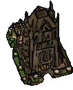 | BD7300 (Dead Man's Pass) | 123 | - | - | - |
| 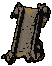 | BD1000 (Coast Way Crossing) | 124 | - | - | - |
| 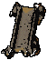 | BD2000 (Boareskyr Bridge) | 125 | - | - | - |
| 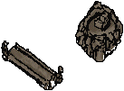 | BD3000 (Coalition Camp) | 126 | - | - | - |
| BD5000 (Underground River) | 127 | - | - | - | |
| BD4000 (Dragonspear Castle) | 128 | - | - | - | |
| 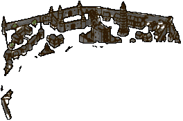 | BD7000 (Coast Way Forest) | 130 | - | - | - |
| BD7100 (Troll Claw Woods) | 131 | - | - | - | |
| BD7200 (Forest of Wyrms) | 132 | - | - | - | |
| BD7400 (Bloodbark Grove) | 133 | - | - | - | |
| 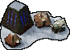 | ID1000 (Easthaven) | 135 | - | - | - |
| ID2000 (Kuldahar Pass) | 136 | - | - | - | |
| ID2100 (Kuldahar) | 137 | - | - | - | |
| ID3000 (The Vale of Shadows) | 138 | - | - | - | |
| ID3600 (Temple of the Forgotten God) | 139 | - | - | - | |
| ID4000 (Dragon's Eye) | 140 | - | - | - | |
| ID5000 (Severed Hand) | 141 | - | - | - | |
| ID6000 (Dorn's Deep) | 142 | - | - | - | |
| ID7000 (Wyrm's Tooth) | 143 | - | - | - | |
| ID8001 (Lower Dorn's Deep) | 144 | - | - | - | |
| ID9100 (Lonelywood) | 146 | - | - | - | |
| 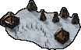 | ID9200 (Barbarian Camp) | 147 | - | - | - |
| ID9300 (Burial Isle) | 148 | - | - | - | |
| 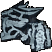 | ID9500 (Gloomfrost) | 150 | - | - | - |
| ID9600 (Sea of Moving Ice) | 151 | - | - | - | |
| IW1000 (Targos) | 152 | - | - | - | |
| IW2000 (Shaengarne Ford) | 155 | - | - | - | |
| 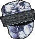 | IW2102 (Shaengarne Bridge) | 156 | - | - | - |
| IW3000 (Horde Fortress) | 157 | - | - | - | |
| IW4000 (Western Pass) | 158 | - | - | - | |
| IW4100 (Icewall) | 159 | - | - | - | |
| IW5000 (Wandering Village) | 160 | - | - | - | |
| IW5001 (The Fell Wood) | 161 | - | - | - | |
| IW5004 (Cold Marshes) | 162 | - | - | - | |
| IW5005 (River Caves) | 163 | - | - | - | |
| IW5102 (River Caves Exit) | 164 | - | - | - | |
| 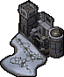 | IW5200 (Black Raven Monastery) | 165 | - | - | - |
| IW5300 (The Underdark) | 166 | - | - | - | |
| IW6200 (Fields of Slaughter) | 170 | - | - | - | |
| 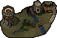 | IW6000 (Kuldahar Valley) | 172 | - | - | - |
| IW6104 (Dragon's Eye Exit) | 173 | - | - | - | |
| ARES01 (Eilistraee's Clearing) | 175 | - | - | - | |
| ARISH1 (Innershade) | 176 | - | - | - | |
| WQ0001 (Silent Swamps) | 177 | - | - | - | |
| ARLDV1 (Deep Gardens) | 178 | - | - | - | |
| L#ND01 (Southern Edge) | 179 | - | - | - | |
| L#FOU0 (Hidden Sanctuary) | 180 | - | - | - | |
| unused (reserved by Lava) | 181 | - | - | - | |
| YS0390 (Govt. West) | 182 | - | - | - |
| EET Worldmap reference for BG1/SoD/SoA/ToB areas as well as up to date reference for supported and uppcoming mods (click to enlarge) Please visit this forum topic for information from which game/mod particular area originates. |
 |